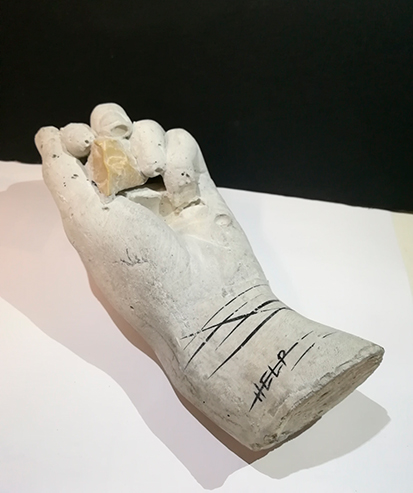

Escultura
Oficina de Artes e Tecnologia II
Exercício 1 - Falar com (2,4 ou 7) pedras na mão
Este trabalho é alusivo à expressão popular de "falar com 7 pedras na mão" e como tal, o tópico que decidi retratar foi a violência. Nesta peça, eu quis representar a mão de uma pessoa que se mutila ao espetar as pedras sobre a pele. Este projeto têm também uma relação com outro trabalho encontrado aqui!
Exercício 2 - O Antropoceno
Neste trabalho criamos umas máscaras alusivas ao nosso pensamento em grupo de como será o corpo do homem no futuro, devido às más ações que este espalha sobre o planeta. Escolhemos a forma de espinhos para mostrar que o homem tornar-se-á uma criatura com uma pele mais forte e espinhosa para se proteger de futuras epidemias. Este trabalho também se encontra aqui sobre a forma de vídeo.